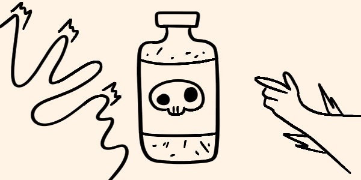
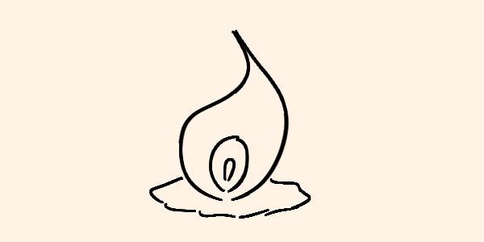

Inicio
Blog
Acerca
Actualizaciones
Actualización: Tendra noticias todos los días. Estara informado todo lo que pase.
Actualización: Ultimamente estan pasando cosas raras, pero no se preocupe mantengase en su casa reguardado
Actualización: Si ven esto seguidores, sobrevivan...
Actualización: El que busca una luz, yo sere su luz.
Ultimos actualizados
Caída del Último Refugio: La Desesperación del Gobierno
El inicio de una nueva era y el fin de la otra.

Bienvenidos a Dazartl: La Última Esperanza en un Mundo Muerto
Una pequeña esperanza en un mundo lleno de caos.
